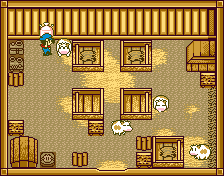

VACAS

Entre o estabulo e o galinheiro está o celeiro. Dentro do celeiro você tem quatro baias para suas vacas, incluindo um quinto usado para vacas gravidas.No canto superior direito está a caixa onde você tira forragem, mais em baixo na esquerda tem a caixa de entrega e em cima também na esquerda a máquina de manteiga e queijo quando você tiver chance de compra-las de Ann.
Cada vaca ficará em frente da caixa de ração associado a ela, assim não há necessidade de se preocupar onde colocar comida no lugar certo como acontece com as galinhas. As vacas andarão dentro do celeiro e as vezes conicidi umas com as outras, tornando dificil determinar qual vaca você ordenhou e qual você não ordenhou. Apenas saia do celeiro e depois volta para resetar e as vacas estarão em frente da caixa de ração.
O tempo não passa enquanto você está dentro do celeiro assim você pode relaxar e cuidar das vacas sem se preocupar.
Antes de você comprar uma vaca primeiro você precisa ter bastante sacos de gramas plantados. Quando você compra sua primeira vaca jovem da Loja de Animais na Aldeia você recebera um sino de graça. A sino te ajudará a pastorear suas vacas para dentro do celeiro assim você pode levar elas para fora para um passeio. Você também precisa comprar a Escova e o Ordenhador do lojista. Se suas vacas ficarem doentes, ele também vende medicamentos para faze-las se sentirem moooo.
Para usar o Sino, apenas equipe ele e aperte o botão "A". As vacas andarão para frente com o som que o sino faz e para quando elas batem em algum obstaculo como uma parede, caixa de ração ou você. A ideia geral é empurrar as vacas para fora do celeiro. Você só pode empurar uma vaca pra fora de uma vez! Quando a vaca finalmente sai, uma pequena cena rodará com você caminhando com a vaca. Caminhando com vacas faz elas mais felizes e crescer mais rápido, o que quer dizer que elas produzirão um Leite maior mais rápido do que se não caminhar com elas. Apenas se lembre de não caminhar com suas vacas quando estiver chovendo ou nevendo lá fora! Vacas não gostam de ficar molhadas.
As vezes quando você tenta usar um de seus itens em uma vaca, ela se afastará antes que você tenha a chance de fazer o que você queria. Se você vê uma vaca com um rosto feliz, você sabe que usou o item certo. Se você não ver um rosto feliz, então fique mais perto e tente de novo. De vez em quando, você pode ter que ordenhar uma vaca várias vezes porque ela continua se movendo. Se isso ajuda, você pode empurrar sua vaca contra algo (como uma parede ou caixa de ração) e depois usar o item.
Ao invés de comprar vacas da Loja de Animais, você pode comprar a Poção Milagrosa/M Potion. A poção pode magicalmente fazer uma vaca adulta grávida. Depois de você comprar a P. Milagrosa ela ficará dentro da Cabana de Ferramentas. Seja cuidadoso quando você for equipa-la e acidentalmente apertar o botão "A", você perderá a poção! Ao invés disso, depois de equipar a P. Milagrosa aperte o botão "START" para trocar para outra ferramenta. Então você sabe que você não usará a poção em algo que não deveria.
| Bezerro >> | 15 dias >> |  Vaca Jovem >> Vaca Jovem >> |
23 dias >> | Vaca Adulta |
Quando sua vaca se torna adulta, você pode vender ela de volta para a Loja de Animais na Aldeia. O Dono da Loja dará a você um preço para sua vaca dependendo do tamanho do leite que ela produz. Ele também não aceitará vacas que não são adultas. Quando vacas são adultas você pode tirar leite delas! Você irá precisar de um ordenhador é claro, onde você pode comprar da Loja de Ferramentas de Ann por 1800G. Quando você começa a entregar leite, o leite irá aparecer no Bar da Eve para compra como uma bebida fresca. Mais tarde você pode comprar as Máquinas de Manteiga e Queijo de Ann quando você tem algumas vacas produzindo Leite Grande. As máquinas são ótimas por que qualquer tamanho de leite pode ser usado nelas.
| Leite Pequeno >> | 150G |
| Leite Médio >> | 250G |
| Leite Grande >> | 350G |
| Manteiga >> | 500G |
| Queijo >> | 500G |
 Bezerro >> Bezerro >> |
Não está para venda |
| Vaca Jovem >> | Não está para venda |
| Vaca com leite pequeno >> | 5000G |
| Vaca com leite médio >> | 8000G |
| Vaca com leite grande >> | 12000G |